A new user goes from an empty window to a saved, working request without the mouse. Every step names its shortcut, and each state tells the user what to do next.
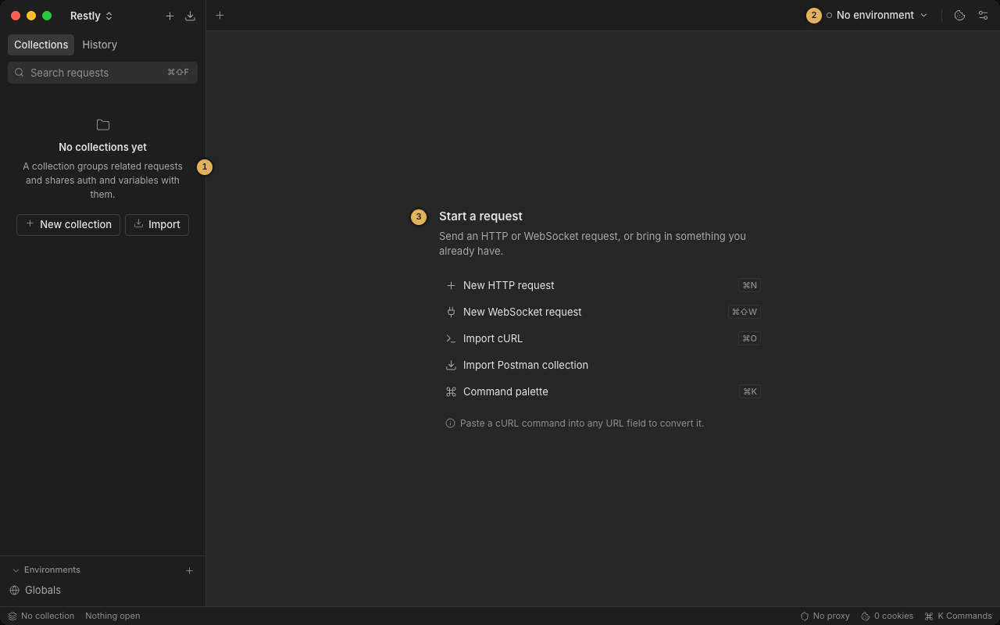
The welcome view lists every way in. The sidebar's empty state offers New collection and Import.
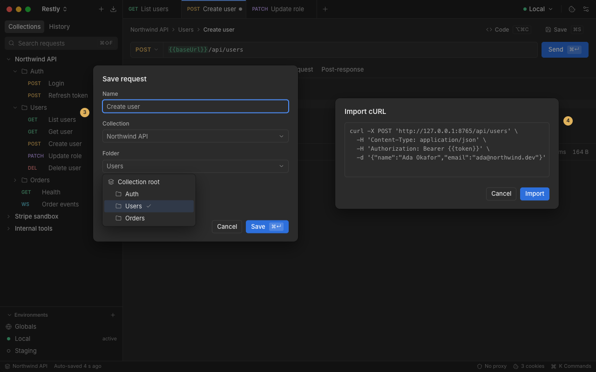
Import cURL turns it into a request tab. Pasting into any URL field does the same.
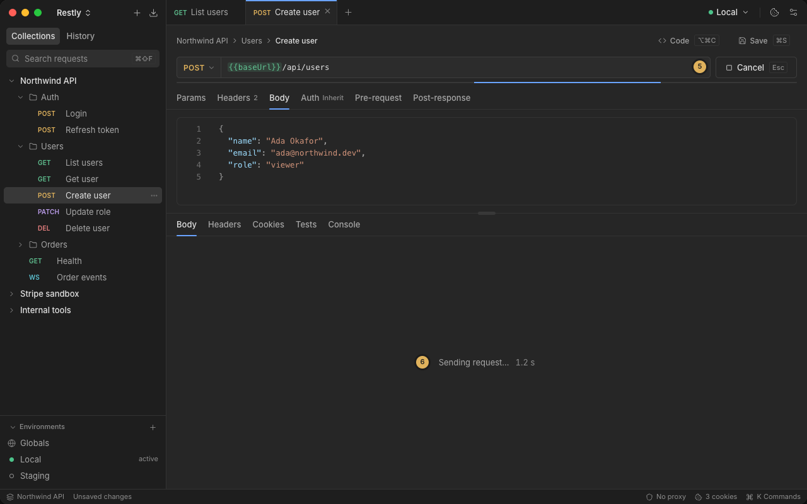
Send turns into Cancel, and a progress line and timer show the request is live.
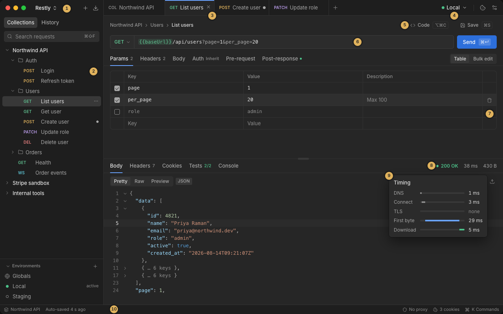
Status, time and size sit on one line. Hovering the time shows where it went.
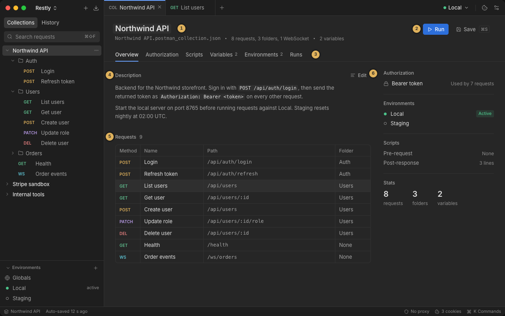
The Save dialog picks a collection and folder. The request then appears in the overview's request list.
A collection run shows one failure. The user jumps to the request, checks the environment, fixes it and confirms with a second run. The failure stays visible from the run summary to the request's Tests tab.
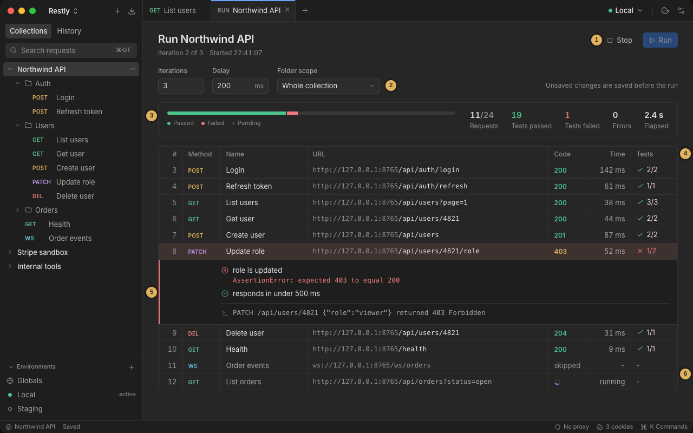
The summary bar turns red. The failing row expands to show the assertion and the console line.
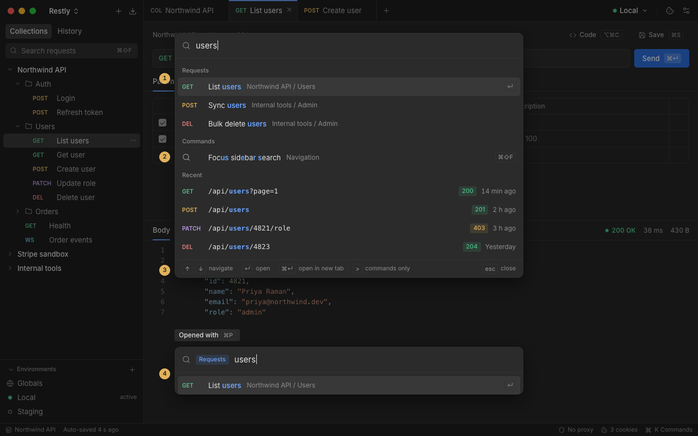
Quick open finds "Update role" by name. Recent sends with their status codes appear in the same list.
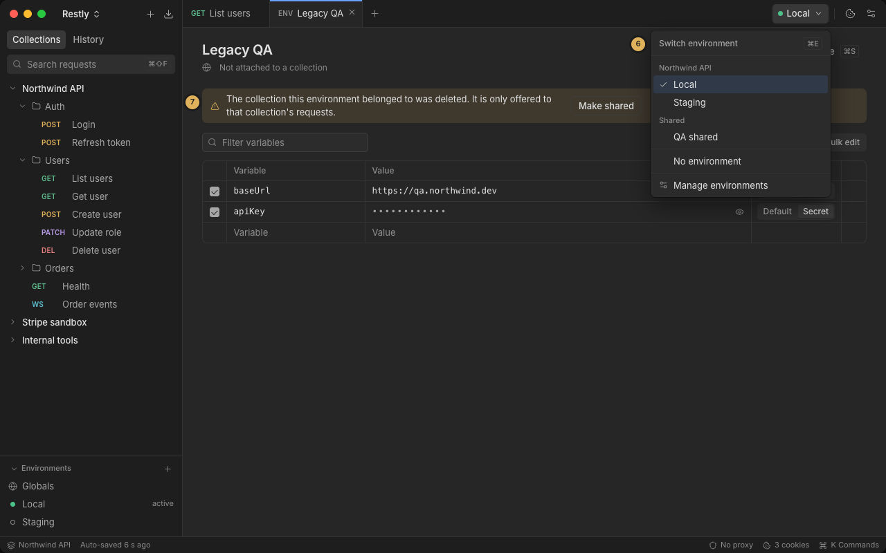
The picker shows which environments belong to this collection and which one is active.
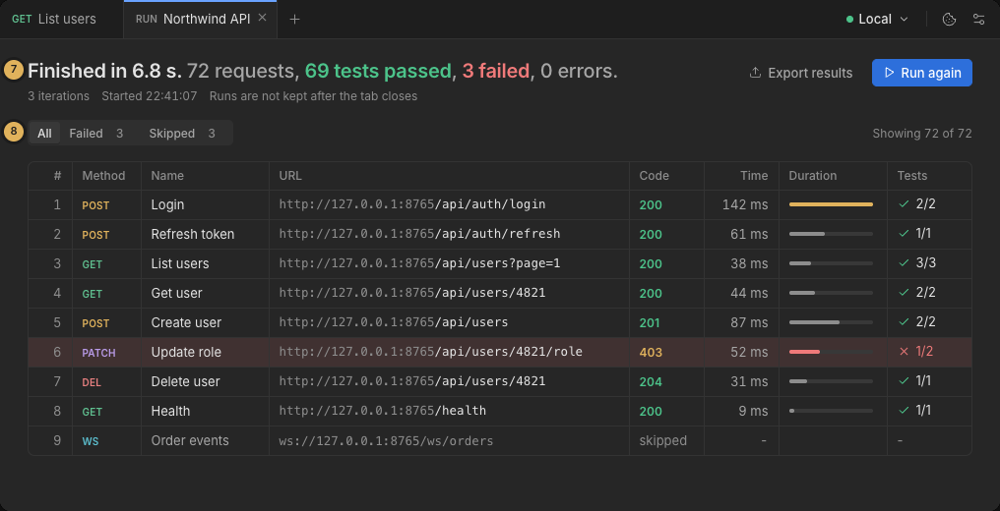
The finished summary shows the count, and the Failed filter confirms nothing is left (proposed).
A WebSocket drops. The user reconnects, filters the log down to one order, checks the session cookie and reopens an earlier connection from history.
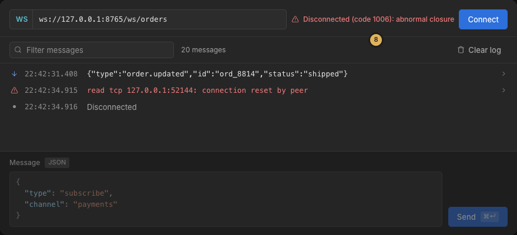
The status names the close code and reason. Connect becomes the primary action and the composer locks.
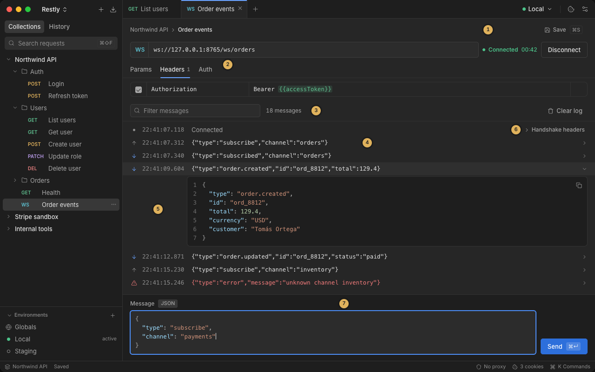
Filtering the log narrows it to one order, and expanding a row shows its pretty-printed JSON.
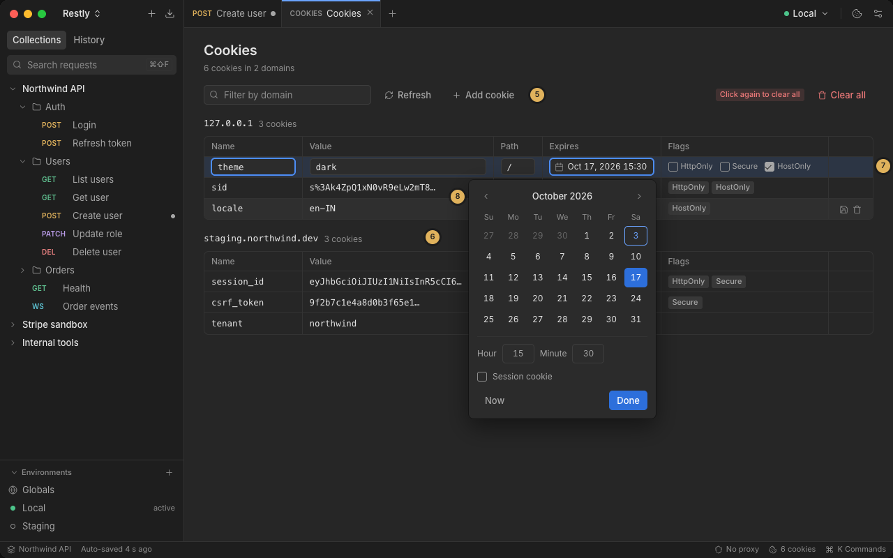
Cookies are grouped by domain, and the flags read at a glance.
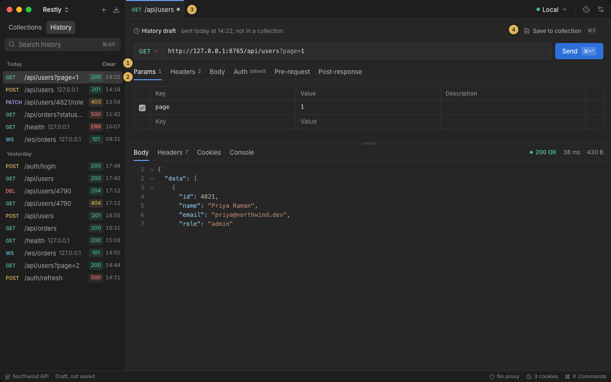
History keeps every send and connect with its status. Opening an entry creates a draft that can be saved back.
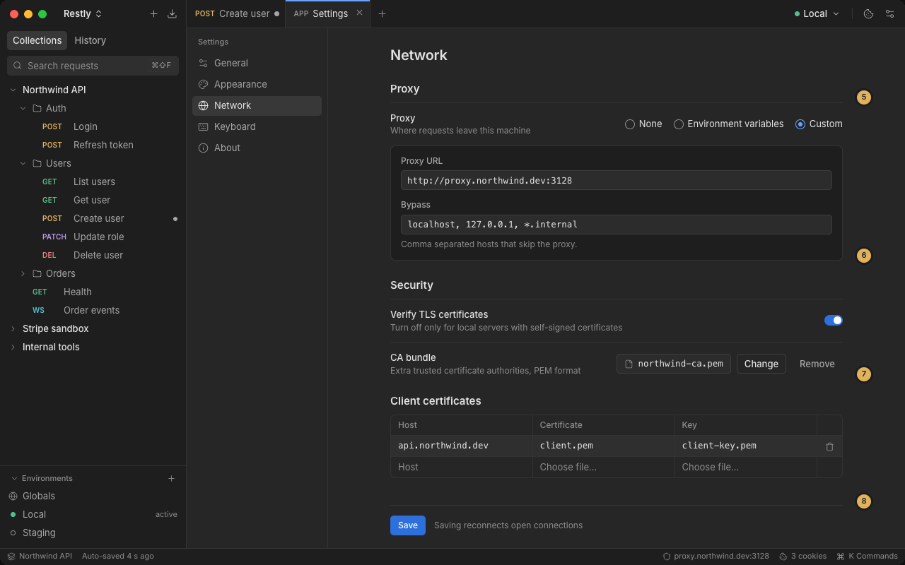
Proxy, TLS verification and client certificates are on one page. Saving reconnects open connections.